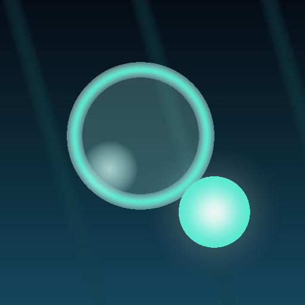

Guide a fragile bubble up from the seabed — and shield it with your orb.
An underwater arcade game about one long climb. The bubble rises on its own and cannot be steered. Your job is the orb: a glowing guardian you drag with your finger and place in front of everything coming at the bubble.
The orb cannot stand still. After each block it dims for a third of a second and lets attacks through, and threats come from several sides. Hugging the bubble fails too — the orb keeps a minimum distance. The whole game is built on this one rule.
Debris falls from above, fish close in from the sides, jellyfish drift in the water. Corals must be broken through in advance — no gap appears on its own. Sometimes the route leads into a canyon, a kelp forest, a sunken city or a glowing trench.
Each one tests something different. Hit the storm jellyfish with her own lightning. Meet the serpent on its lunge line. Piranhas sweep in formation, and exactly one fish in that formation can hurt you. With the shark the mouth decides: closed means block, open means run. And at ten thousand metres the Great Shadow waits, remembering every trick of the nine before it.
Bosses sit on round marks, not on a random schedule: the third one always waits at 3000 metres, however many runs it takes you to get there. Clear the whole row and it starts again, twice as hard.
Подводная аркада про один долгий подъём. Пузырёк поднимается сам, управлять им нельзя. Ваше дело — страж: светящийся шарик, который вы таскаете пальцем и подставляете под всё, что летит навстречу.
Страж не может стоять на месте. После каждого отбитого объекта он на треть секунды тускнеет и пропускает удары, а угрозы идут с нескольких сторон. Прижаться к пузырьку тоже нельзя — страж держит минимальную дистанцию. Из этого правила выведена вся игра.
Сверху сыплются обломки, с боков подплывают рыбы, в толще воды висят медузы. Кораллы приходится пробивать заранее: проход сам не появится. Иногда путь уводит в локацию — каньон, ламинариевый лес, затонувший город, светящаяся впадина.
Каждый проверяет своё. Медузу бьют её же молниями. Змея встречают на линии рывка. Стая пираний идёт строем, и опасна в нём ровно одна рыба. У акулы всё решает пасть: сомкнута — подставляй стража, раскрыта — уводи. А на десяти тысячах ждёт Великая тень, которая помнит приёмы всех девяти предыдущих.
Боссы стоят на круглых отметках, а не по случайному расписанию: на 3000 метрах всегда третий, в какой бы заход туда ни дошли. Пройден весь ряд — он начинается заново, но вдвое тяжелее.